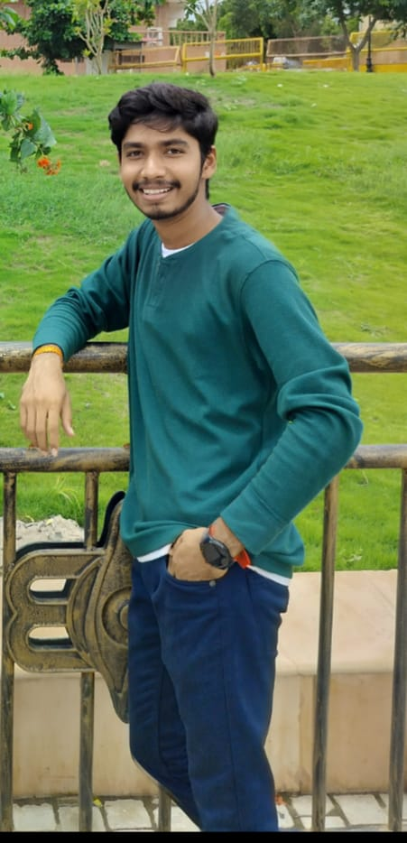

Keshav Chandra Birari

Summary
"Dynamic B.Tech CSE student at Avantika University, Ujjain, with a passion for innovation and a solid foundation in computer science concepts. Proficient in programming languages such as Java, Python, and C++, with hands-on experience in web development, data structures, and algorithms. Excels in collaborative environments, with a keen eye for problem-solving and a drive for continuous learning. Eager to leverage academic knowledge and practical skills to contribute effectively to projects and propel technological advancements."
Education
-
School (2006-2021)
-
St. Judes Hr. Sec School - 10+2 with Mathematics.
-
Coaching(2021-2022)
-
MGCI - Preparation for ICAR.
-
College (2022-2026)
-
Avantika University - Bachlore of Technology, Computer Science and Engineering.
Work Experinece
-
Community Moderator at Probo
May 2022 - October 2022
-
Demonstrated exceptional leadership and communication skills as a Community Moderator.
-
Moderated online forums and discussions, ensuring a positive and engaging environment.
-
Cultivated a vibrant online community by actively participating in discussions, addressing user inquiries, and resolving conflicts with tact and diplomacy.
-
Developed and implemented community guidelines and policies to maintain a respectful and inclusive atmosphere.
-
Collaborated with cross-functional teams to strategize and execute community engagement initiatives.
-
Analyzed user feedback and engagement metrics to drive continuous improvement efforts.
-
Creator at Probo
June 2022 - June 2023
-
Conceptualized and organized trading events on the Probo platform, facilitating user participation and engagement.
-
Designed and executed innovative event formats to encourage opinion sharing and trading among users.
-
Collaborated with the product team to integrate event features seamlessly into the platform, ensuring a smooth user experience.
-
Provided support and guidance to users during events, fostering a collaborative and interactive trading environment.
Skills
-
Technical Skills
-
Python, c++, HTML, CSS, JavaScript,etc.
-
Skilled in figma and Canva
-
Database Management (SQL, My SQL, Mongo DB)
-
DSA and Aalgorithms
-
Non Technical Skills
-
Event Planning and Execution
-
Community Engagement and Management
-
Collaboration and Teamwork
-
User Experience Optimization
-
Problem-Solving and Adaptability
Awards and certificates
-
Community Moderator of the month (July, September, October)
- Certificate of Moderator
About Me